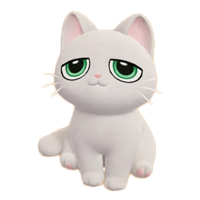
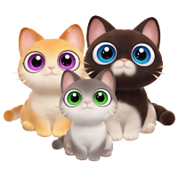

🐱 Chats

Niveau de bâtisseur 12
La passion se débloque au niveau de bâtisseur 12.

5 Chats dans ton foyer
1er chat niveau 1 de la passion, 2e niveau 3, 3e niveau 5, 4e niveau 7, 5e niveau 9.

Soins des chats
Si tu prends soin de tes chats ils te ramèneront des cadeaux chaque matin.

Races de chats
Il existe 18 races de chats